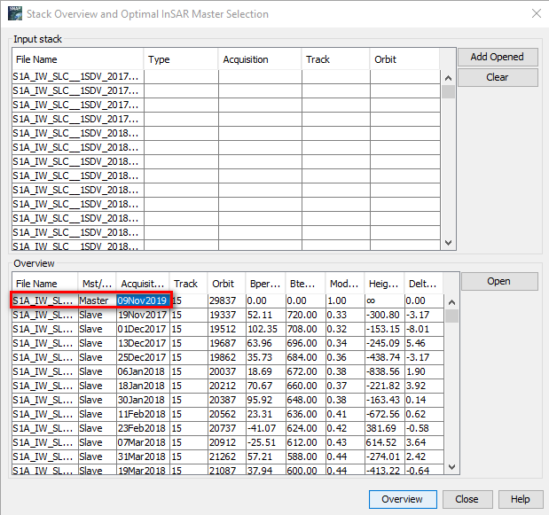

StaMPS Process of Ruhr
Intro
In order to compare the influence of coal mining activity 1nd it’s further impact in city, we conduct a series research both include Xuzhou city and Ruhr valley in Germany, which is known by coal mining history in last century. This post is about using Sentinel 1A SAR data to produce land subsidence LOS velocity by StaMPS-InSAR in LiDO3.
Dataset
135 Sentinel1-A SLC IW arcsending SAR data with path 15 and frame 364 from 2016-09-30 to 2021-12-01 has been acquired from ASF data search vertex1.
File name: S1B_IW_SLC__1SDV_20161013T171535_20161013T171604_002491_004335_1A75
1 | |
Pre-process with snap2stamps
1. SNAP Desktop
- Select optimal master in SNAP using
Radar/Interfermetric/InSAR Stack Overview-> master:20200201

-
Subset whole image using
TOPSAR Split via Radar / Sentinel-1 TOPS / S-1 TOPS Split. Set the processing parameters- IW1
- VV
- 5-9
Directory: I:\Data\Ruhr\SAR\SPLIT
- Get LAT/LON MIN/MAX (bounding box) for PSI area of interest. This can be obtained e.g. from ROI polygon in QGIS Layer Properties | Metadata | Properties | Extent or ArcGIS.
Extent of Study area:
| Extent | ||
|---|---|---|
| Top | 5,743,550.426000 | m |
| Bottom | 5,674,701.496000 | m |
| Left | 312,612.000000 | m |
| Right | 430,668.525000 | m |
Convert UTM to Latitude and Longitude2:
| Extent | ||
|---|---|---|
| Latitude | 2.061542 | deg |
| Longitude | 51.718088 | deg |
| Latitude | 2.862711 | deg |
| Longitude | 51.283068 | deg |
-
After
subsetthe SAR data, if it doesn’t cover the whole ROI, extent should be manually picked up in SNAP usingcopy pixel info to clipboardright click. -
Use
subsetinSNAPto getGeoRegion.
North Lat: 51.058
West Lon: 6.636
South Lat: 51.956
East Lon: 7.26
2. snap2stamps in WSL
-
Start
Xlaunch:One large window->Start no client->Disable access control -
Start Ubuntu on Windows
1 | |
- Edit
/home/yuchi/software/snap2stamps/bin/project.confset up configuration for your project.
1 | |
-
Move the master (zip + TOPS - Split Output) to the directory
masterin your PROJECTFOLDER/mnt/i/SAR/Data/Ruhr/master/. -
Make sure that all slave images (zip) are stored in the subfolder
slavesin the PROJECTFOLDER/mnt/i/SAR/Data/Ruhr/slaves/ -
exit
Xlaunch -
Run the python scripts of snap2stamp directly in your shell:
1 | |
-
Copy folder
graphs,logs,masterandsplitinI:SAR\Data\Ruhr\towork\smyumeng\Sentinel_PS\Ruhrwith WinSCP. Process the following step in Lido. -
Edit the
project.conffile in\work\smyumeng\snap2stamps\bin:
1 | |
- Run snap2stamps commands using
sbatch
cd to /work/smyumeng/project/snap2stamps_script/ and open in terminal
1 | |
- Or simply run snap2stamps commands in terminal
1 | |
StaMPS in LiDO
Errors during process
Error: / by zero in coreg_ifg_topsar.py
This error is occurred due to wrong polygon input.
Solution 1: Edit code in coreg_ifg_topsar.py
1 | |
Solution 2: Edit lat to lon and lon to lat
本博客所有文章除特别声明外，均采用 CC BY-SA 4.0 协议 ，转载请注明出处！